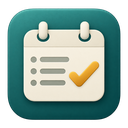
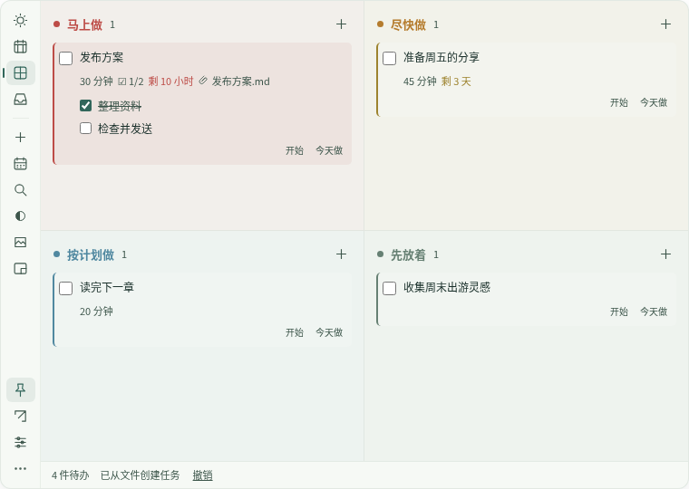

文件和任务，放在一起。
拖入文件、文件夹或项目工作空间，直接从任务中打开。原文件留在原处。

DeskPlan 日序给计划一点位置，给工作留些空间。
把文件拖进来，安排一个日期。下一步就在眼前，工作时也不会挡住其他应用。
Windows · macOS · Linux / 中文 & English

融入桌面
显示在桌面图标之上、其他应用之下。背景和文字透明度分别调整；固定在角落，或缩成只显示当前任务和接下来两件的小窗。
拖入文件、文件夹或项目工作空间，直接从任务中打开。原文件留在原处。
今天最多挑出三件重要任务；本周按预计耗时安排。计划哪天做，与真正的截止日期分开。
四种颜色区分优先顺序。尽快做的任务剩余不超过 48 小时，会自动显示在马上做。
无需账号，没有广告与遥测。任务保存在本机，提供滚动备份、JSON 备份和 CSV 导出。
示例任务 · 真实应用 · 15 秒
使用真实应用与示例任务演示：拖入文件，设定截止时间，安排今天，再缩成小窗。
DESKPLAN · v1.0.11
选择你的系统，下载 GitHub 上经过测试的正式版。
Windows 安装包尚未签名，macOS 使用临时签名且未公证，首次打开可能出现系统提示。Linux 使用 X11 / XWayland。
不需要。这是桌面 App，任务保存在本机，没有云同步。开启更新检测或下载更新时，会连接 GitHub。
不会。附件只保存本机文件和文件夹的路径。备份包含路径，不包含原文件内容。
可以，在设置里即时切换简体中文和英文。你自己输入的任务内容不会被翻译。
1.0.10 及以前的版本在仓库改名后需要手动安装一次新版，覆盖安装即可保留数据。新版支持在应用内下载更新。